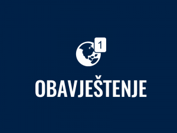

Internacionalni Univerzitet u Novom Pazaru je nastao na tlu vjekovnog susretanja i prožimanja raznih naroda i kultura. Osnovan je 2002. godine, kao zadužbina (vakuf), sa ciljem da obrazovanje i neprestana težnja za sticanjem znanja budu najbolji i najprepoznatljiviji brendovi ovog podneblja. Ova visokoobrazovna institucija je među prvima u našoj zemlji koncipirala sistem studija po modelu zapadnoevropskih zemalja. Ovakve intencije osnivača – zadužbinara ili vakifa, potvrđene su prije svega ostvarivanjem saradnje sa brojnim uglednim univerzitetima u zemlji i inostranstvu, uz mogućnost realizacije programa razmjene studenata
Departman